tp_jms
Installation d'OpenJMS
Suivez les instructions d'installation d'OpenJMS sur votre poste
Usage d'OpenJMS avec BlueJ
1) Compilez les exemples fournis par OpenJMS, placés dans le répertoire jms_examples
- Notez que depuis bluej, seule la compilation est possible, l'exécution sera effectuée depuis une console en ligne de commande
- Le répertoire +libs de votre répertoire contient toutes les interfaces JMS, c.f. archive jms1.1.jar
2) Démarrez OpenJMS, une mise en oeuvre possible est ici
console> \openjms-0.7.7-beta-1\bin>admin
(Actions/Start OpenJMS, puis Connections/online), sans oublier de positionner JAVA_HOMEcette interface vous permettra de créer les files, "topic", etc.. nécessaires ensuite
3) Exécutez dans deux consoles ces deux commandes, votre répertoire se nomme /tp_jms/
- console Sender :
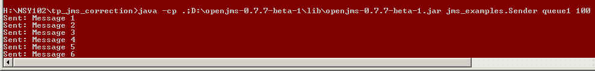
- console Receiver
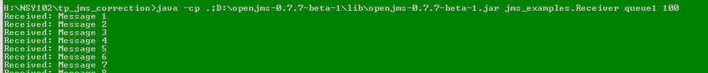
En résumé
- Usage de BlueJ pour l'édition, compilation et soumissions avec JNEWS
- L'exécution s'effectue depuis une console avec l'environnement openjms-0.7.7-beta-1/lib
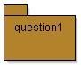 2 Files, 1 Client, 1 Fournisseur
Complétez l'architecture du Patron "Request Reply", dont le schéma est extrait du livre de G.Hohpe & B. Woolf ci-dessous
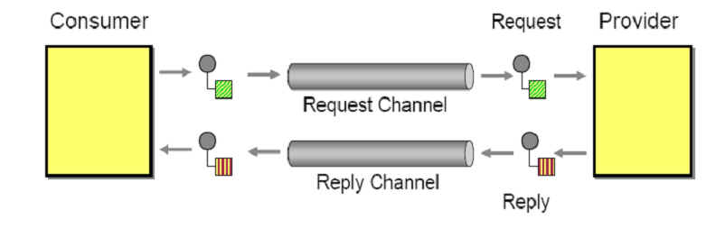
- Consumer : Envoie un message de type MessageQ1 sur "RequestChannel"
et réceptionne un message depuis "ReplyChannel"
- Provider : reçoit les messages venant de "RequestChannel" et se contente de retourner le message reçu
estampillé avec la date de "traitement" par le Provider...
Préférez une implémentation asynchrone de ce "Provider"
voir l'interface MessageListener
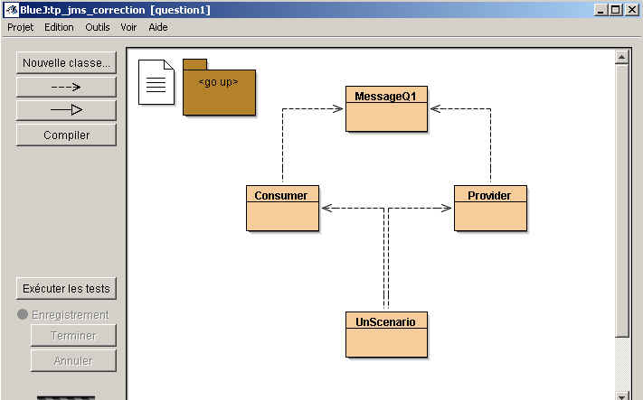
Exemple : UnScenario, envoi d'un message et affichage du résultat retourné
la trace :
le source :
public class UnScenario{ public static void main(String[] args) throws Exception{ Provider provider=null; Consumer consumer=null; try{ provider = new Provider("request","reply"); consumer = new Consumer("request","reply"); consumer.send("test_envoi"); System.out.print("message recu : "); System.out.println(consumer.receive().toString()); }finally{ consumer.close(); provider.close(); } } }
notes :
- Les files ont été créées par l'administrateur,
- Le nom des files est libre,
- L'ordre d'exécution du "Consumer" et du "Provider" est indifférent (voir la classe UnAutreScenario)
Après avoir réalisé et soumis cette question avec JNEWS
- Étudier et détaillez sur votre rapport ces quelques lignes,
représentent-elles une autre proposition d'implémentation du patron "RequestReply" ?
producer = session.CreateProducer(msg.getJMSReplyTo()); reply = session.createTextMessage("reply"); reply.setJMSCorrelationID(msg.getJMSMessageID()); producer.send(reply);- Lire attentivement cette implémentation du patron RequestReply, commentée par quelques lignes sur votre rapport
http://www.enterpriseintegrationpatterns.com/RequestReplyJmsExample.html
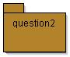 Publish-Subscribe
Ce schéma du Publish Subscribe est extrait du livre de G.Hohpe & B. Woolf
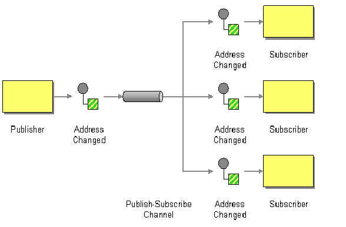
Complétez l'architecture de l'agenda ci-dessous, c'est un agenda d'équipe("meeting") une prise de rendez-vous engendre la publication de ce rendez-vous à tous les abonnés de l'agenda
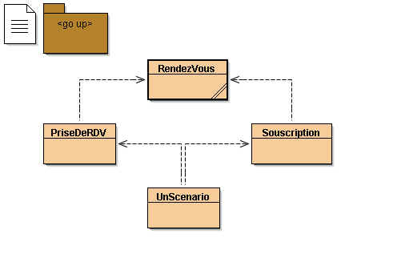
- note : L'agenda, (Topic) a été créé par l'administrateur.
Exemple : UnScenario, prise d'un rendez-vous, un agenda avec 3 abonnés
la trace :
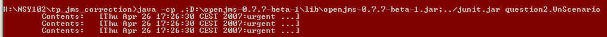
le source
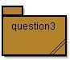 Durable Subscriber
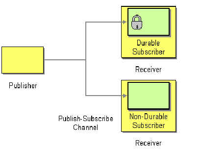
Il suffit qu'un abonné soit absent, déconnecté pour qu'il ne reçoive pas le rendez-vous. Complétez la classe "SouscriptionDurable" afin qu'un abonné ait bien son rendez-vous, et ainsi soit prévenu.
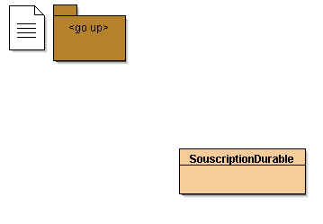
Falcultatif : Vérifiez avec openJMS, la possibilité de filtrer les rendez-vous proposez un exemple d'abonnement sélectif
comme par exemple le cas d'un abonné qui ne souhaite être prévenu que lorsque le rendez-vous est dans l'heure suivante ...
Une Transaction, illustration, pas de soumission avec JNEWS
- Vérifiez le bon fonctionnement des transactions JMS, en exécutant la classe proposée, et en interprétant la trace obtenue
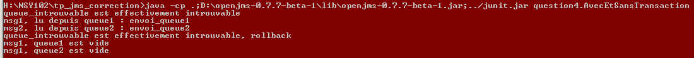
ci-dessous, un extrait "allégé": envoi de deux messages, à l'occurrence de l'exception, appel de session.rollback
Session session = null; try{ // envoi, d'un message aux 3 files ... session = connexion.createSession(true, Session.AUTO_ACKNOWLEDGE); Destination dest = (Destination) contexte.lookup("queue1"); MessageProducer sender = session.createProducer(dest); TextMessage message = session.createTextMessage("envoi_queue1"); sender.send(message); dest = (Destination) contexte.lookup("queue2"); sender = session.createProducer(dest); message = session.createTextMessage("envoi_queue2"); sender.send(message); dest = (Destination) contexte.lookup("queue_introuvable"); session.commit(); }catch(javax.naming.NameNotFoundException e){ System.out.println(e.getMessage() + " est effectivement introuvable, rollback"); session.rollback(); }catch(Exception e){ e.printStackTrace(); }
- Ajoutez vos propres essais de mise en oeuvre des transactions,
par exemple, une nouvelle file, un "topic" supplémentaire, ...
Installez les sources et traces de vos essais supplémentaires sur votre rapport
Post-liminaire : Lecture d'une solution à la question 2 de l'examen de septembre 2009
Thème : Patron Return Address
Le message envoyé contient une « Adresse de Retour » qui désigne le récepteur du résultat.
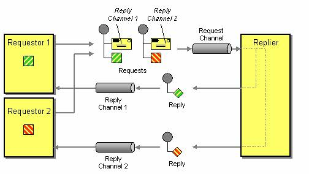
Source : http://www.enterpriseintegrationpatterns.com/ReturnAddress.html
Le message contient un canal de communication (ReplyChannel), sur lequel est envoyé le traitement effectué par le receveur (Replier).
Cette encapsulation permet au receveur, d’ « ignorer » l’émetteur (Requestor), le demandeur d’un traitement à accomplir.
Le message est transmis au receveur par le canal (RequestChannel).Question) Proposez le patron Return Address en utilisant l’API JMS, JAVA Message Service,
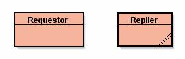
Complétez les classes Requestor et Relier ci-dessous, en proposant respectivement les méthodes de classe newRequestor et newRelier. Les files RequestChannel, ReplyChannel_1 et ReplyChannel_2 ont été créées par l’administrateur JMS.
La classe Requestor à compléter à l'examen, complète ici
package question2;
import javax.jms.Connection;
import javax.jms.ConnectionFactory;
import javax.jms.Destination;
import javax.jms.JMSException;
import javax.jms.Message;
import javax.jms.MessageConsumer;
import javax.jms.MessageListener;
import javax.jms.MessageProducer;
import javax.jms.Session;
import javax.jms.TextMessage;
import javax.naming.Context;
import javax.naming.InitialContext;
import javax.naming.NamingException;
import java.util.Hashtable;
public class Requestor implements MessageListener {
private static Context context;
private Session session;
private Destination replyQueue;
private MessageProducer requestProducer;
private MessageConsumer replyConsumer;
protected Requestor() {
super();
}
public static Requestor newRequestor(Connection connection, Destination requestQueue, String replyQueueName)
throws JMSException, NamingException {
Requestor requestor = new Requestor();
requestor.initialize(connection, requestQueue, replyQueueName);
return requestor;
}
protected void initialize(Connection connection, Destination requestQueue, String replyQueueName)
throws NamingException, JMSException {
session = connection.createSession(false, Session.AUTO_ACKNOWLEDGE);
replyQueue = (Destination) context.lookup(replyQueueName); //args[0]); // ReplyChannel_1 ou ReplyChannel_2
requestProducer = session.createProducer(requestQueue);
replyConsumer = session.createConsumer(replyQueue);
replyConsumer.setMessageListener(this);
// start the connection, to enable message receipt
connection.start();
}
public void send(String message) throws JMSException {
TextMessage requestMessage = session.createTextMessage();
requestMessage.setText(message);
requestMessage.setJMSReplyTo(replyQueue);
requestProducer.send(requestMessage);
System.out.println("Sent request");
System.out.println("\tTime: " + System.currentTimeMillis() + " ms");
System.out.println("\tMessage ID: " + requestMessage.getJMSMessageID());
System.out.println("\tCorrel. ID: " + requestMessage.getJMSCorrelationID());
System.out.println("\tReply to: " + requestMessage.getJMSReplyTo());
System.out.println("\tContents: " + requestMessage.getText());
}
public void onMessage(Message msg) {
try{
if (msg instanceof TextMessage) {
TextMessage replyMessage = (TextMessage) msg;
System.out.println("Received reply ");
System.out.println("\tTime: " + System.currentTimeMillis() + " ms");
System.out.println("\tMessage ID: " + replyMessage.getJMSMessageID());
System.out.println("\tCorrel. ID: " + replyMessage.getJMSCorrelationID());
System.out.println("\tReply to: " + replyMessage.getJMSReplyTo());
System.out.println("\tContents: " + replyMessage.getText());
} else {
System.out.println("Invalid message detected");
}
} catch (JMSException e) {
e.printStackTrace();
}
}
public static void main(String[] args) throws Exception{
// create the JNDI initial context
// nsy102 lignes extraites de http://openjms.sourceforge.net/usersguide/using.html
Hashtable<String,String> properties = new Hashtable<String,String>();
properties.put(Context.INITIAL_CONTEXT_FACTORY, "org.exolab.jms.jndi.InitialContextFactory");
properties.put(Context.PROVIDER_URL, "tcp://localhost:3035/");
Requestor.context = new InitialContext(properties);
// look up the ConnectionFactory
ConnectionFactory factory = (ConnectionFactory) context.lookup("ConnectionFactory");
// look up the Destination
Destination requestChannel = (Destination) context.lookup("RequestChannel");
// create the connection
Connection connection = factory.createConnection();
Requestor requestor = Requestor.newRequestor(connection, requestChannel, args[0]);
requestor.send(args[1]); // le message
Thread.sleep(Long.MAX_VALUE);
}
}
La classe Relier à compléter, à l'examen, complète ici
package question2;
import javax.jms.Connection;
import javax.jms.ConnectionFactory;
import javax.jms.Destination;
import javax.jms.JMSException;
import javax.jms.Message;
import javax.jms.MessageConsumer;
import javax.jms.MessageListener;
import javax.jms.MessageProducer;
import javax.jms.Session;
import javax.jms.TextMessage;
import javax.naming.Context;
import javax.naming.InitialContext;
import javax.naming.NamingException;
import java.util.Hashtable;
public class Replier implements MessageListener {
private Session session;
private static Context context;
protected Replier() {
super();
}
public static Replier newReplier(Connection connection, String requestQueueName)
throws JMSException, NamingException {
Replier replier = new Replier();
replier.initialize(connection, requestQueueName);
return replier;
}
protected void initialize(Connection connection, String requestQueueName)
throws NamingException, JMSException {
session = connection.createSession(false, Session.AUTO_ACKNOWLEDGE);
// look up the Destination
Destination requestQueue = (Destination) context.lookup(requestQueueName);
MessageConsumer requestConsumer = session.createConsumer(requestQueue);
requestConsumer.setMessageListener(this);
// start the connection, to enable message receipt
connection.start();
}
public void onMessage(Message message) {
try {
if ((message instanceof TextMessage) && (message.getJMSReplyTo() != null)) {
TextMessage requestMessage = (TextMessage) message;
System.out.println("Received request");
System.out.println("\tTime: " + System.currentTimeMillis() + " ms");
System.out.println("\tMessage ID: " + requestMessage.getJMSMessageID());
System.out.println("\tCorrel. ID: " + requestMessage.getJMSCorrelationID());
System.out.println("\tReply to: " + requestMessage.getJMSReplyTo());
System.out.println("\tContents: " + requestMessage.getText());
String contents = requestMessage.getText();
Destination replyDestination = message.getJMSReplyTo();
MessageProducer replyProducer = session.createProducer(replyDestination);
TextMessage replyMessage = session.createTextMessage();
replyMessage.setText(contents);
replyMessage.setJMSCorrelationID(requestMessage.getJMSMessageID());
replyProducer.send(replyMessage);
System.out.println("Sent reply");
System.out.println("\tTime: " + System.currentTimeMillis() + " ms");
System.out.println("\tMessage ID: " + replyMessage.getJMSMessageID());
System.out.println("\tCorrel. ID: " + replyMessage.getJMSCorrelationID());
System.out.println("\tReply to: " + replyMessage.getJMSReplyTo());
System.out.println("\tContents: " + replyMessage.getText());
} else {
System.out.println("Invalid message detected");
System.out.println("\tType: " + message.getClass().getName());
System.out.println("\tTime: " + System.currentTimeMillis() + " ms");
System.out.println("\tMessage ID: " + message.getJMSMessageID());
System.out.println("\tCorrel. ID: " + message.getJMSCorrelationID());
System.out.println("\tReply to: " + message.getJMSReplyTo());
}
} catch (JMSException e) {
e.printStackTrace();
}
}
public static void main(String[] args) throws Exception{
// create the JNDI initial context
// nsy102 lignes extraites de http://openjms.sourceforge.net/usersguide/using.html
Hashtable<String,String> properties = new Hashtable<String,String>();
properties.put(Context.INITIAL_CONTEXT_FACTORY, "org.exolab.jms.jndi.InitialContextFactory");
properties.put(Context.PROVIDER_URL, "tcp://localhost:3035/");
Replier.context = new InitialContext(properties);
// look up the ConnectionFactory
ConnectionFactory factory = (ConnectionFactory) context.lookup("ConnectionFactory");
// create the connection
Connection connection = factory.createConnection();
Replier replier = Replier.newReplier(connection, "RequestChannel");
Thread.sleep(Long.MAX_VALUE);
}
}
Exécution en 3 lignes de commandes
start java -cp G:\openjms-0.7.7-beta-1\lib\openjms-0.7.7-beta-1.jar;. question2.Replier
start java -cp G:\openjms-0.7.7-beta-1\lib\openjms-0.7.7-beta-1.jar;. question2.Requestor ReplyChannel_1 truc1
start java -cp G:\openjms-0.7.7-beta-1\lib\openjms-0.7.7-beta-1.jar;. question2.Requestor ReplyChannel_2 truc2